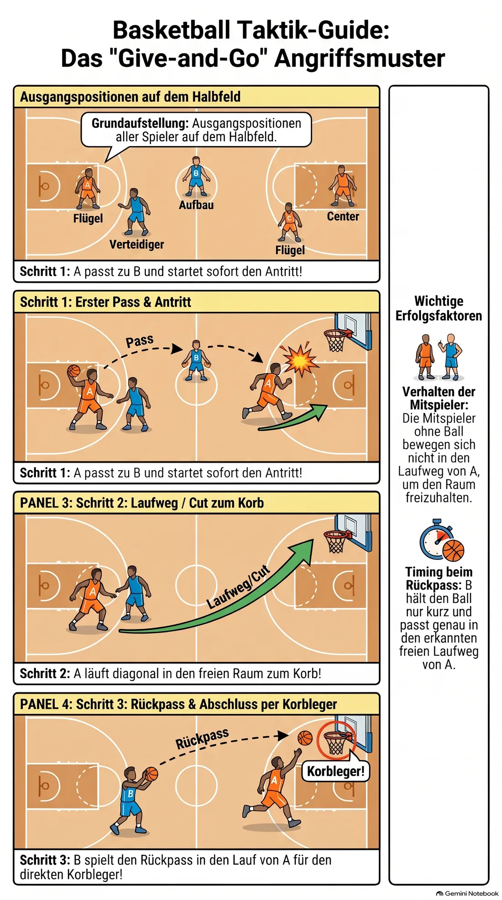
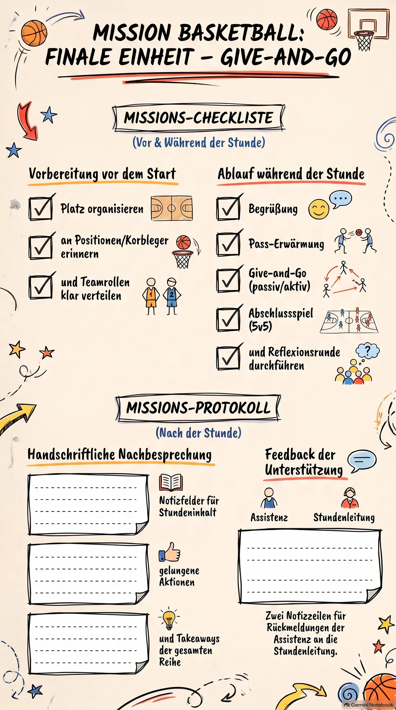

Einsatz 04 · 04 Angriffsmaßnahme mit der gesamten Mannschaft: Give-and-Go
Ihr seid heute das Team für die letzte Stunde der Reihe. Lest diese Akte vorher einmal in Ruhe durch, am besten gemeinsam im Team. Diese Stunde baut auf Einsatz 01 (Korbleger) und Einsatz 03 (Positionen) auf — ein kurzer Rückblick zu Beginn hilft der Gruppe.
Ablaufplan (60 Minuten)
-
0–5
Begrüßung
Kurze Wiederholung der Positionen aus der letzten Stunde.
-
5–15
Erwärmung
Passübungen zu fünft im Kreis, Tempo steigern.
-
15–35
Hauptteil A: Angriffsmuster einüben
Einfaches Muster „Give-and-Go“ (Pass und Weiterlaufen zum Korb) ohne Gegner in 5er-Gruppen einüben.
Muster erst ohne Ball mit Laufwegen zeigen, dann mit Ball. -
35–50
Hauptteil B: Mit Verteidigung
Gleiches Muster gegen einen passiven Verteidiger (geht nicht aktiv zum Ball).
Tempo erst langsam, dann normal. -
50–58
Anwendung
5 gegen 5, Fokus liegt auf dem Versuch, das Muster im echten Spiel anzuwenden.
Nicht auf Ergebnis schauen, sondern ob das Muster erkennbar ist. -
58–60
Abschluss
Abschlussrunde über alle vier Stunden: „Was nehmt ihr aus der Reihe mit?“
Beweisfoto: das Angriffsmuster im Bild

So bereitet ihr euch vor
Ihr müsst den Ablauf in drei Schritten erklären und zeigen können:
- Spieler A passt den Ball zu Spieler B und läuft direkt nach dem Pass schnell Richtung Korb („Cut“).
- A läuft am Verteidiger vorbei in den freien Raum zwischen Freiwurflinie und Korb.
- B spielt den Ball in den freien Raum vor A, A nimmt ihn im Lauf an und schließt mit einem Korbleger ab.
Die übrigen Mitspieler halten ihre Grundposition und bewegen sich nicht in den Laufweg von A, damit Raum frei bleibt statt zugestellt zu werden. Sorgt vorher für genug Platz an einem Korb, um das Muster zunächst ohne Gegner in Ruhe zu zeigen.
Zeigt das Muster erst ohne Ball, nur die Laufwege, dann mit Ball, dann mit passivem Verteidiger. Ohne klare Ausgangspositionen bricht das Muster schnell zusammen — stellt vor dem ersten Versuch alle noch einmal auf ihre Startposition.
Vor der Gruppe stehen — kurz und knapp
Verhaltenskodex
- Stellt euch in einen Halbkreis, sodass ihr alle acht im Blick habt, niemand hinter euch.
- Sprecht lauter und langsamer als sonst, aus dem Bauch heraus, eine Anweisung nach der anderen.
- Legt vorher ein festes Signal fest (z. B. Pfeife einmal = alle hören auf), und wartet danach wirklich, bis es ruhig ist.
- Bei Störungen: ruhig bleiben, die Person direkt und kurz ansprechen, mit Namen und Blickkontakt. Keine lange Diskussion vor der Gruppe.
- Bei größeren Problemen nicht allein durchkämpfen — holt euch Unterstützung aus eurem Team oder sprecht die Sportlehrkraft an.
- Lob nicht vergessen, wenn etwas gut klappt — das wirkt oft mehr als jede Ermahnung.
Euer Checklisten-Auftrag
